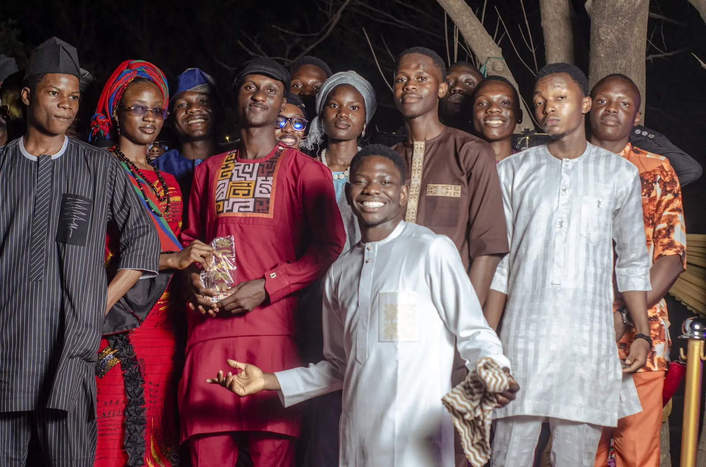
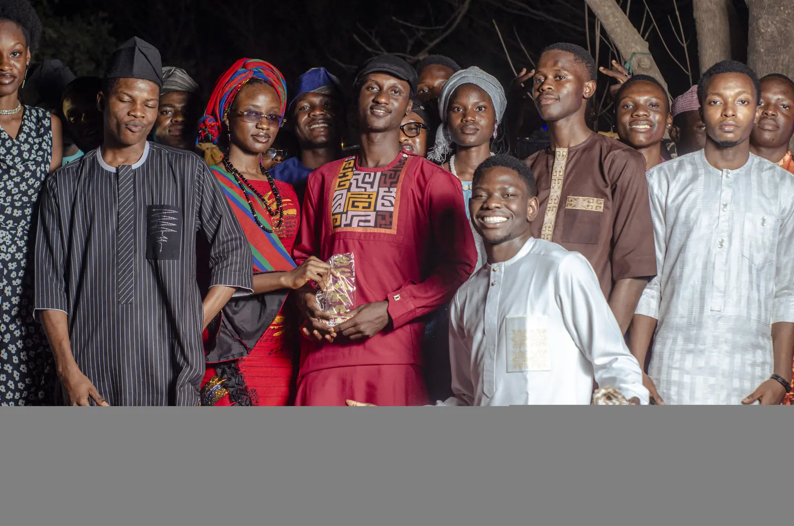
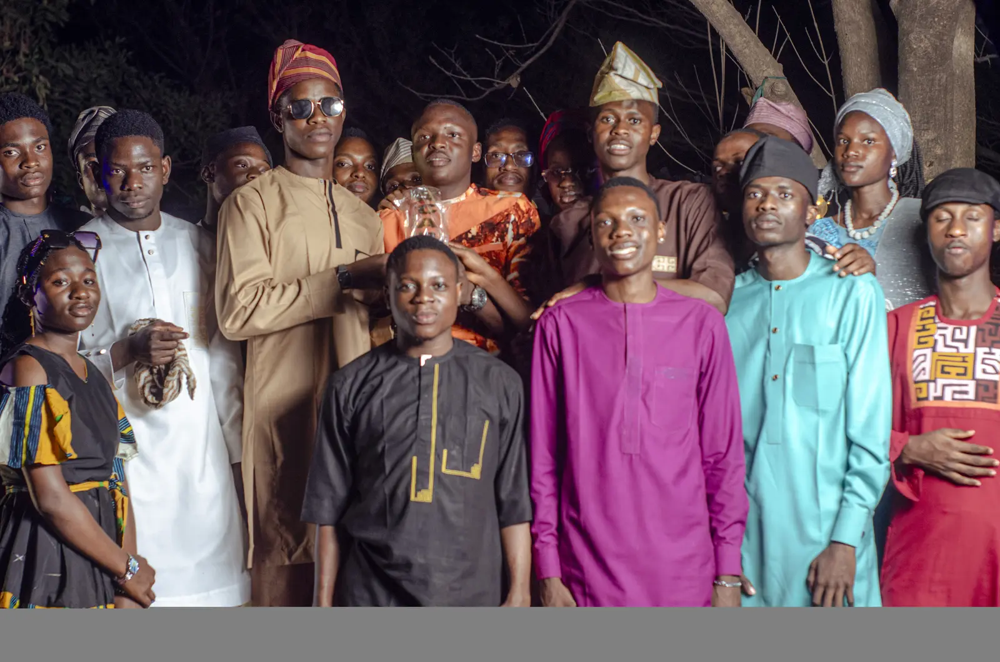

IEEE EMBS • 2026
Recognition and Research
Signals that
the work matters.
Awards, rankings, publications and research directions that reflect progress across engineering, innovation and community impact.
01
NICE Innovation Challenge
Third Runner Up
Smart Concrete Mix Ratio Verification SystemNIPES
Engineering Award
Engineering and Science recognition, 2026TIEC
Top 10
Team LUMAQ, 2026Deep Funding
Regional Top 13
Innovation selectionSDSN Niger State
Best Advocate
Sustainable development advocacy02
Research
Engineering questions worth pursuing.
Current interests connect autonomous systems, energy, intelligent monitoring, smart materials and accessible technology.
Autonomous systems
Sensing, control and decision making for intelligent machines.
Energy systems
Resilient power and monitoring for essential services.
Computer vision
Visual intelligence for detection, inspection and safety.
Smart materials
Sensor based verification for safer infrastructure.
03
Publication
Atlas of Fire
An IEEE published science fiction story exploring the intersection of engineering, health and the future.
Open publication ↗04
Humanitarian recognition
Service recognised through impact.
Recognised for sustained contribution to student development, community service and opportunity building.
Humanitarian Award • Community impact

